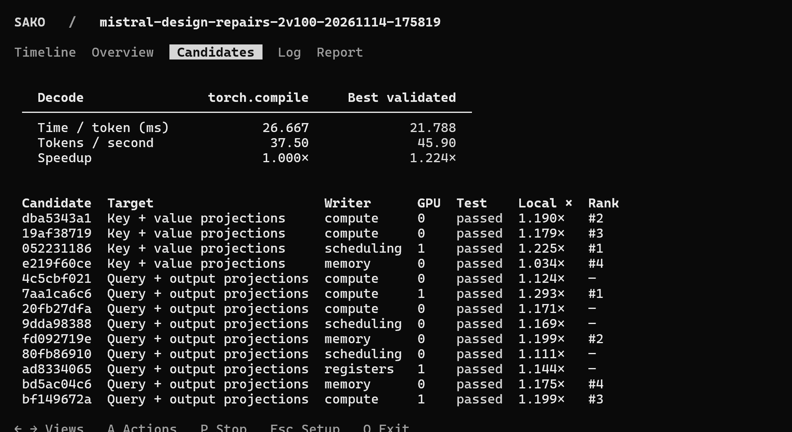

Swarm Agent Kernel Optimization
Faster language
model inference.
SAKO finds slow GPU operations. Agents write Triton kernels, and the evaluator keeps changes that pass correctness checks and speed up the complete model.
Decode latency
V100 · FP16Milliseconds per token · lower is better
- PyTorch
torch.compile- SAKO
speedup vs PyTorch
tokens per second
Same answer, different speeds
Real output from the saved V100 benchmarks.
Prompt
This replay uses the measured median decode rates. The clock starts after the first token. Each answer stops at the benchmark’s 128-token limit.
torch.compile
SAKO
Follow a kernel through SAKO
Pick a model part. See its parallel search and the finalist tests from its first visit.
Harness workflow
Token embedding
Transformer layer
Attention
Feed-forward
Candidate results
| Original vs. candidate | Local speedup | Model decision |
|---|
Local speedup compares the candidate with the compiled operation. SAKO decides what to keep after the full model test.
Benchmark method
We ran each benchmark on a Tesla V100 with FP16 and batch size 1. The model generated 128 tokens. We timed the 127 decode steps after the first token.
The evaluator checked output tokens, prediction scores, and cache contents. It compared the final model with torch.compile.

